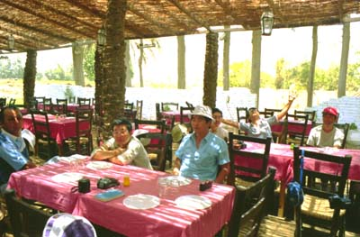

<< 28/60 >>
臭いどぶ川（ナイル）の横にあるレストラン。みんなで試しに入ろうと肝試しを含んで入店した。
英語で何とか注文し、話に花が咲いていた。ふと周りを見たらフランス人が多く我々より遅く来た客はもう食事を始めていた。何人かがこれに気づき、フランス語を喋れる者がギャルソン（ウエイター）！と怒鳴りつけて、早く持って来いと言ったら間もなく持ってきた。
フランス語を喋れない外人を差別するようである。もっともこの国の公認語はフランス語であった。

|
<< 28/60 >> |
||||
|
 |
||||